An interactive generative installation that uses ink as its main medium to explore the spatialisation of consciousness.
一件互动生成装置,以墨为材料,探讨意识的空间化
When AI compresses consciousness that unfolds over time into retrievable coordinates, the visitor re-enters this space through the movement and stillness of the hand. The ink responds by shifting between diffused, disturbed, and condensed states.
In the short moments when the system does not respond immediately, time regains its thickness, bound inward.
当 AI 把在时间中展开的意识压缩为可检索的坐标,观众以手的移动与静止 重新进入这片空间,墨则回应以扩散、扰动、聚拢之间的转换。
在系统不立即回应的短暂片刻里,时间重新有了厚度,朝向内里。
When AI compresses consciousness that unfolds over time into retrievable coordinates, how can the body re-enter and experience it?
当 AI 把在时间中展开的意识压缩为可检索的坐标,身体如何重新进入并经验它?
Consciousness unfolds over time, while the model compresses it into spatial coordinates
In Bergson's idea of duration, time is not made up of separate moments. Each moment carries traces of what came before, like a melody: the present note only makes sense because the previous notes are still active within it.
Spatialisation happens when a continuous process is divided, located and compared. Latent space is one such structure: continuous changes that originally have no fixed position are transformed into coordinates that can be located, compared and retrieved.
Datafication further turns continuous flows into elements that can be stored, reorganised and retrieved. What makes AI distinctive is not only its ability to preserve the past, but also to predict what comes next. Recommendation, completion and prediction bring the "next moment" forward, making the present increasingly thin.
This transformation is neither simply a loss nor a form of liberation. It creates new possibilities while also reducing temporal thickness. Within the model, datafied experience enters latent space and becomes a structure that can be located and retrieved.
Yet not all forms of knowing can be fully spatialised. Some knowledge only exists while bodily action is taking place. This is why the work must be experienced through the body, rather than only described to it.
意识随时间生成,而模型将其压缩为空间坐标
在柏格森的"绵延"中,时间不是由彼此分离的瞬间组成的。每一刻都包含此前留下的 痕迹,就像一段旋律:此刻的音之所以成立,是因为前面的音仍在其中持续作用。
空间化发生在连续过程被分解、定位和比较的时候。潜空间正是一种这样的结构: 原本没有固定位置的连续变化,被转化为可以被定位、比较和检索的坐标。
数据化进一步将连续的流转化为可存储、重组和检索的元素。AI 的特殊之处不仅在于 保存过去,更在于预测下一步:推荐、补全与预测让"下一刻"提前出现, 也使当下逐渐变薄。
这种转变既不是单纯的损失,也不是解放。它创造新的可能,同时削弱时间的厚度。 在模型内部,被数据化的经验进入潜空间,成为可定位和检索的结构。
但并非所有"知"都能被完全空间化。有些知识只在身体行动发生的过程中成立。 这也是为什么作品必须通过身体被经验,而不能只被描述。
Ink is not a metaphor for consciousness
In water, ink spreads into itself without clear boundaries. Once it settles on paper, however, it forms shapes and occupies a fixed position. Ink therefore holds both fluidity and fixity, becoming a material way to explore how a temporal process can be transformed into spatial form.
It also connects to diffusion models. These models generate images by gradually moving from noise towards form, drawing conceptually from processes of physical diffusion. The work brings the diffusion of real ink and computational diffusion into the same system, creating a connection between material process and generative models.
墨不是意识的比喻
水中的墨相互渗透、没有边界;落在纸上后,它却形成形状并占据位置。墨因此 同时呈现了流动与固定,也成为作品中"时间如何被转化为空间"的一种材料形式。
它也与扩散模型形成联系:模型从噪声逐渐生成图像,而这一过程借用了物理扩散 的概念。作品将真实墨水的扩散与计算中的 diffusion 并置,让材料过程与生成 模型发生对应。
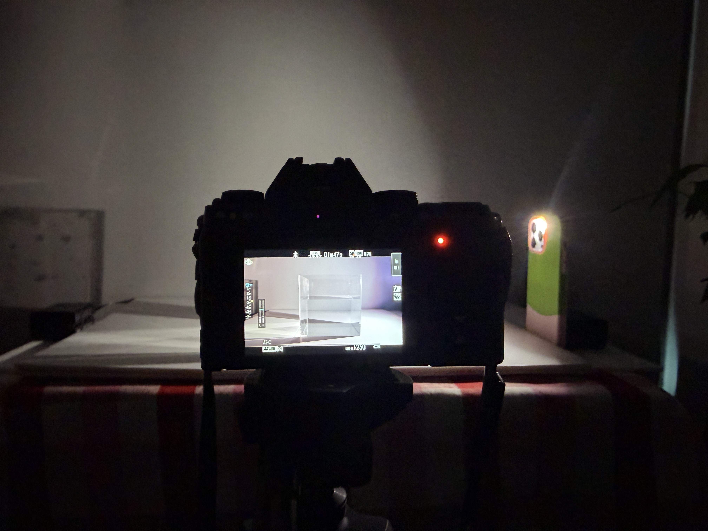
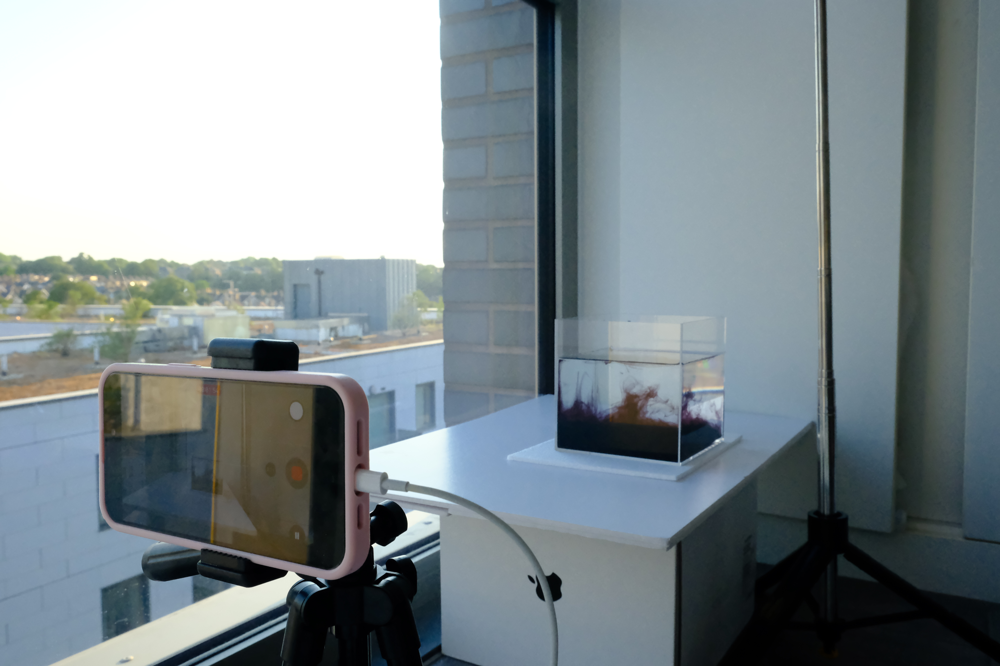
Three sessions at home across June 2026 produced 54 clips, of which 26 were selected. Four distinct phases were screenshotted from each, retouched to remove air bubbles and tank reflections, and cropped to a monochrome square: 101 training images in four categories — pure diffusion, layered ink, disturbed ink, gathering ink.
2026 年 6 月在家中的三场拍摄共录制 54 段视频,从中精选 26 段。 每段截取四个清晰且有区别的阶段,在 Photoshop 中修去气泡与水缸反光, 裁切为单色方图——最终得到四个类别、共 101 张训练图:自然扩散、 层叠、扰动、聚拢。
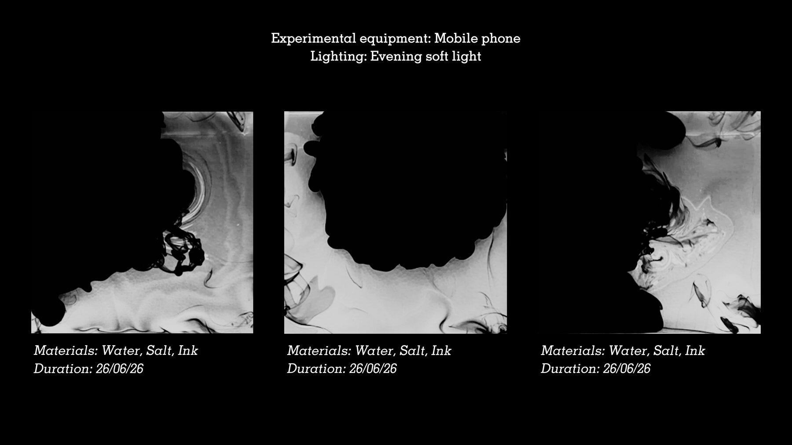
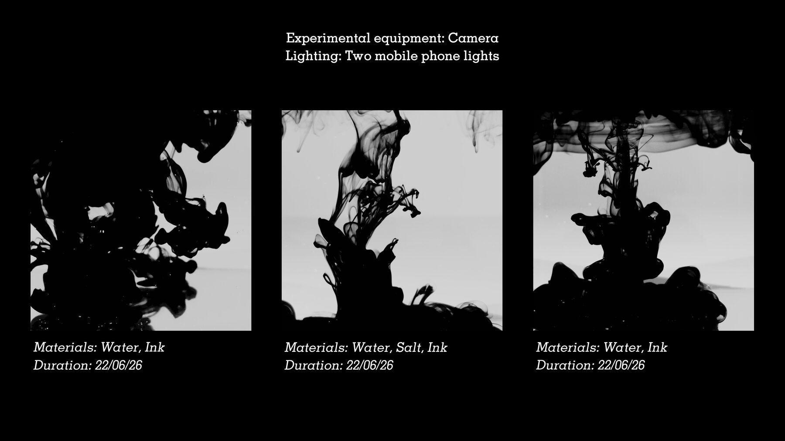
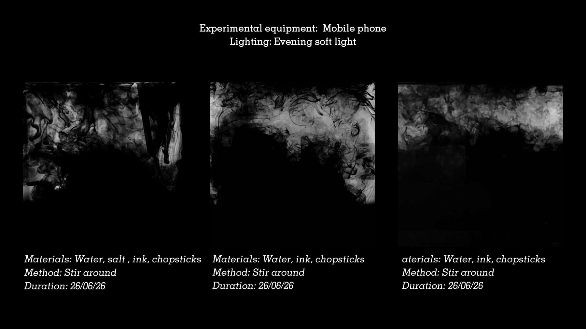
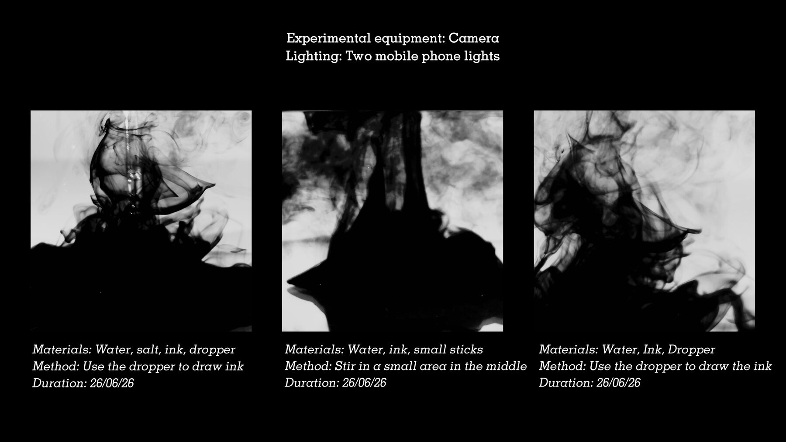
The pipeline performs what the work describes
管线执行了作品所描述的事
| Operation | What happens to the ink | |
|---|---|---|
| 1 | Filming → frames | The flow is cut into single frames |
| 2 | Grouping and captioning | States are named as categories |
| 3 | LoRA training | Ink becomes a distribution of features |
| 4 | Latent-space mapping (the c axis) | Each state acquires a coordinate |
| 5 | Multi-seed generation + interpolation (along the c axis) | Retrievable; continuity stitched back on |
| 操作 | 墨发生了什么 | |
|---|---|---|
| 1 | 拍摄 → 切帧 | 流动被切成一格一格 |
| 2 | 分组与标注 | 状态被命名为类别 |
| 3 | LoRA 训练 | 墨成为特征分布 |
| 4 | 潜空间映射(c 轴) | 每个状态有了坐标 |
| 5 | 多 seed 生成 + 插帧(沿 c 轴) | 可检索;连续性被缝回 |
Every step makes the ink more retrievable. The last step attempts to manufacture continuity again — which is precisely what the work is asking about.
Pre-baking is not a compromise; it is the argument. Everything the visitor sees already exists inside a retrievable structure, and nothing is being generated in front of them. If the image really were coming into being in time, the work would contradict itself.
每一步都让墨更可被检索。最后一步试图把连续性重新造出来—— 这正是作品在问的事。
预烘焙不是妥协,而是论点。观众看到的一切都已存在于一个可检索的结构里, 没有任何东西在观众面前"正在生成"。如果画面真的在时间中生成, 作品反而自相矛盾。
The eight c bins the video is scrubbed between. Each moment the visitor sees corresponds to a c value between 0 and 1. The axis is not a slider through arbitrary shapes — it was pre-composed as eight named bins, each with its own caption, and the video interpolates between them.
| c | label | viewpoint | What appears |
|---|---|---|---|
| 0.0 | autonomous_diffusion | top-down | A solid opaque black ink blob with a lobed edge, curved gray washes spreading outward layer by layer |
| 0.2 | early_search | side | A dense ink canopy at the surface with droplet fringes, translucent veils and tendrils sinking in distinct layers |
| 0.4 | human_disturbance | side | Dense gray fog of churned ink filling the frame, forms dissolving into soft mist |
| 0.5 | fog_deepening | side | Thicker, darker fog covering most of the frame, only small pale openings remaining |
| 0.6 | latent_search | side | Broken strands dissolved into countless tiny particles — a hazy grain fog everywhere |
| 0.7 | fog_receding | side | The fog thinning and clearing, dark strands emerging, beginning to gather toward the centre |
| 0.8 | convergence | side | Delicate looping ink threads spiralling inward, drawn into a solid dark mass |
| 1.0 | temporary_return | side | A dense settled black mound at the bottom, a single twisting tendril column above it, clear water around |
c = 0.6 is the granular-fog stage — the same one the LoRA was retrained seven times to reach.
视频在其间擦动的八档 c 值。观众看到的每一刻都对应一个 0 到 1 之间的 c 值。这条轴不是一根穿过任意形状的滑杆,而是被预先构造成 八个带各自 caption 的分箱,视频在它们之间插帧。
| c | label | 视角 | 画面 |
|---|---|---|---|
| 0.0 | autonomous_diffusion | 俯拍 | 一团带凹凸边缘的实心黑墨,四周是弯曲流动的灰墨晕层层向外铺开 |
| 0.2 | early_search | 侧视 | 水面一层致密墨盖挂着液滴边,半透明墨帘和悬丝分层下沉 |
| 0.4 | human_disturbance | 侧视 | 搅动而起的浓灰色墨雾占满画面,形被溶进雾里 |
| 0.5 | fog_deepening | 侧视 | 更厚更黑的墨雾覆盖大部分画面,只留少数明亮空隙 |
| 0.6 | latent_search | 侧视 | 墨丝被打散成无数细颗粒——均匀的雾中细粒纹理充满全帧 |
| 0.7 | fog_receding | 侧视 | 灰雾变薄消退,黑墨丝从消散的雾中显现,开始朝中心聚拢 |
| 0.8 | convergence | 侧视 | 细腻环绕的墨丝盘旋着向内,被拉入一个实心暗块 |
| 1.0 | temporary_return | 侧视 | 底部一堆致密沉降的黑墨,上方一根扭曲的柱状拖丝,四周清水 |
c = 0.6 是"细颗粒雾"那一档——LoRA 前后重训七次要到达的正是它。
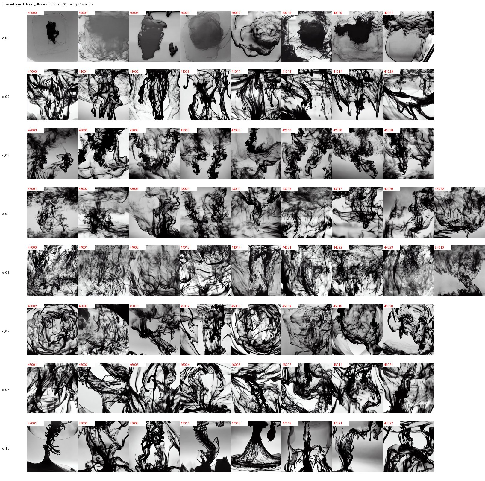
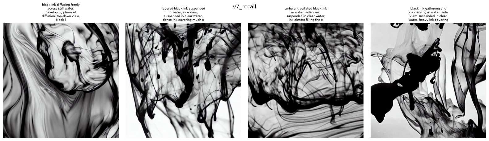
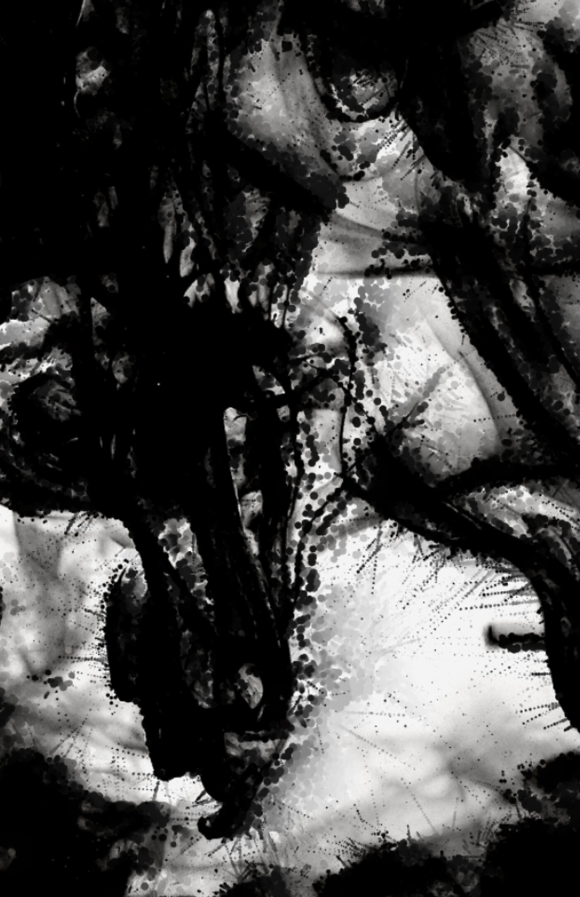
Waiting is written into the formula, not asked of the visitor
Move a hand across the screen and the ink stays dispersed and disturbed — searching unsettles what it moves through. Stop, without lifting, and it condenses. Eighteen seconds of stillness gathers it completely; lift, and it comes apart again.
Touch produces a single value, c, running from 0 to 1 — from ink dispersed to ink condensed. It reads not where the hand is but how it has behaved over time, so what appears depends on the input that came before, never on the command of the moment. There is no way to simply set it.
That lag is the material realisation of the Husserlian layer — the slow onset is protention, the receding is retention, and the present acquires thickness instead of being a point. Gathering is laboured where dispersing is easy: eighteen seconds against under two. It is the only part of the work that is genuinely temporal.
等待被写进了公式本身,而不是被要求于观众
把手放在屏幕上移动,墨便保持弥散与扰动——搜寻会扰动它所穿过的东西。 停下来,但不抬手,墨开始凝结。静止十八秒,它完全聚拢;抬手,它重新散开。
触摸产生一个值 c,从 0 到 1——从墨的弥散到墨的凝结。它读的不是手 在哪里,而是手在时间中如何行动;因此画面取决于此前的输入,而非此刻的指令。 没有办法直接把它设定成某个值。
那段迟滞是胡塞尔那一层的物质实现——慢启动是前摄,退去是持存,当下由此有了 厚度,而不再是一个点。聚拢是费力的,消散是轻易的:十八秒对不到两秒。 它是整件作品里唯一真正具有时间性的部分。
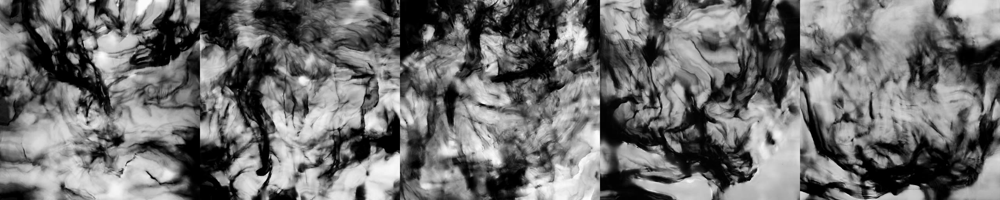
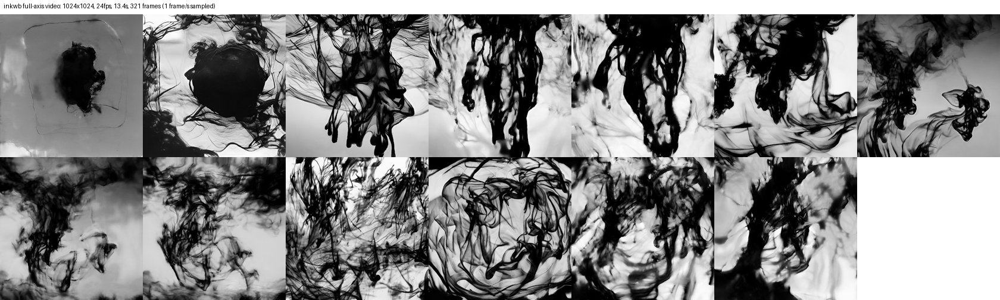
The projection carries the ink changing state, seen frontally: you are inside it. A second screen carries machine-vision readouts, coordinates and parameters, seen from above: you are over it. One is qualitative multiplicity, the other quantitative. They are present at once and equal in standing — if one had to be read before the other, the second would become an instruction manual, and would imply that the data side is the more real one. Every shift of the eyes performs an act of spatialisation in person.
投影承载墨的状态变化,正面观看:你在里面。副屏承载机器视觉的读数、坐标与 参数,俯视观看:你在上方。一边是质的多样性,另一边是量的多样性。两者同时 在场、地位平等——若必须先读其一再读其二,副屏就成了说明书,并暗示数据 那一边更真实。观众每一次移开视线,都在亲身做一次空间化。
Seven retrainings, each triggered by a specific failure
七次重训,每一次都由一个具体的失败推动
Container features leaking into the trigger word. A flat phase axis. States collapsing at certain seeds. A top-down view that could not be summoned without also summoning literal basins. Captions so generic the model could not tell one frame from another. The full reasoning for every round — including the rounds that did not work — is kept in the process log.
容器特征泄漏进触发词。阶段轴拉不开差异。某些 seed 下状态塌陷。 俯视视角怎么写都会连带召唤出真实的水盆。caption 笼统到模型分不出帧与帧的 区别。每一轮完整的推理——包括那些没有成功的轮次——都记在过程日志里。